La barra de Aeralis cambió con su remake. Para que las tres barras vayan a juego, esta es la de Rajang con el mismo estilo.
Solo vista previa · 5 de octubre de 2026 · tótems corregidosTodavía no está en el juego. Las fotos «después» son fotos reales de las escenas de Rajang con la barra nueva puesta encima, al tamaño del juego. Si te gusta, la paso al juego.
En partida
Antes · Fase I
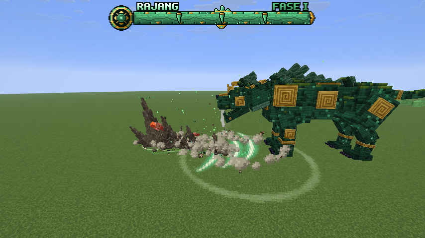
Después · Fase I
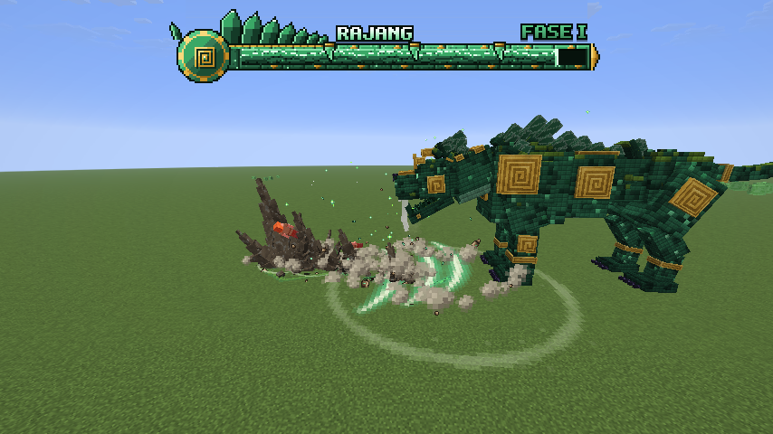
Antes · durante el Sello
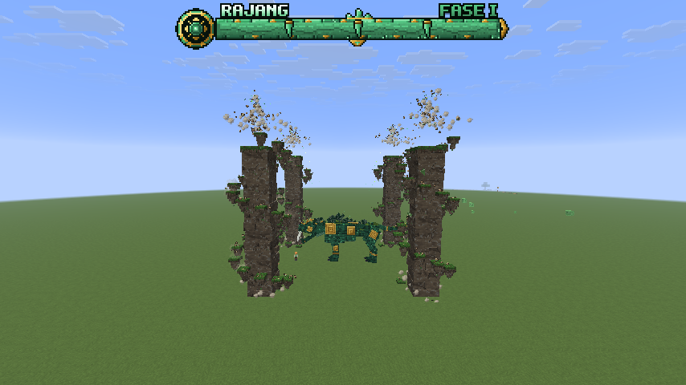
Después · durante el Sello
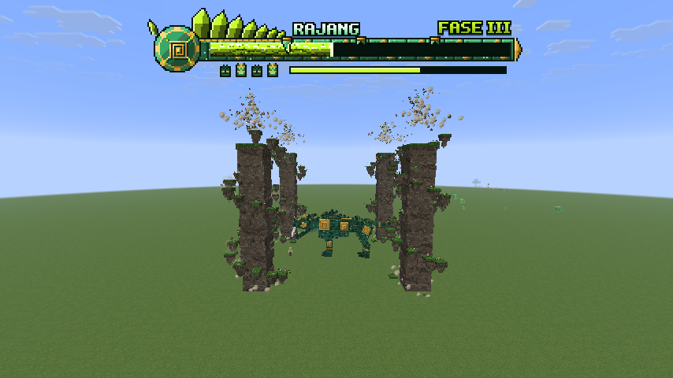
Antes · Furia de Jade
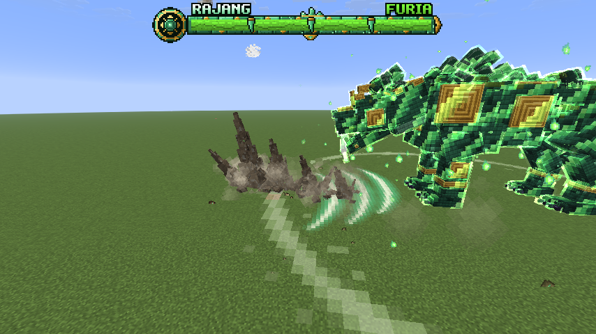
Después · Furia de Jade
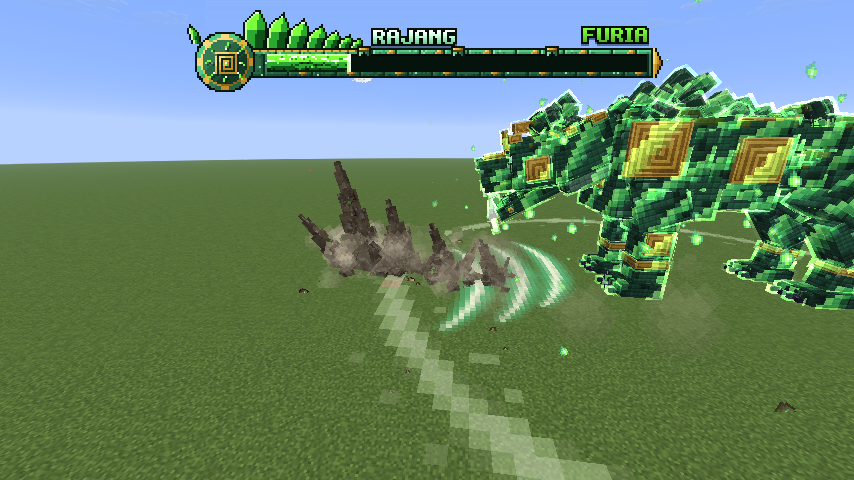
Qué cambia
Mismo tamaño que la de Aeralis (240 × 44), así las tres barras se ven de la misma familia.
El emblema es la placa de oro en espiral de su armadura, sobre un disco de jade. En cada fase se agrieta más y las grietas brillan con el color de la fase.
Encima de la barra, la cresta de cristales de jade de su lomo (en Aeralis va un ala). Cambia de color con la fase.
El relleno trae su color (roca con la veta de energía), con el frente encendido y el rastro claro al recibir daño.
Las muescas siguen siendo colmillos, ahora con la punta encendida. Al pasarlas se parten.
Durante el Sello, debajo: los cuatro tótems del Sello, dibujados como en el juego (la columna de piedra verde con sus glifos encendidos y las bandas de oro). Los rotos pierden el tramo de arriba y se les apagan los glifos. Al lado, la losa del tiempo, que se pone roja al final.
Con la Furia, todo en verde vivo y el rótulo FURIA.
Cada estado, de cerca
Fase I
Antes
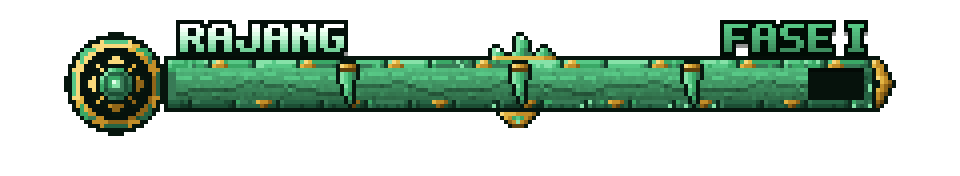
Después
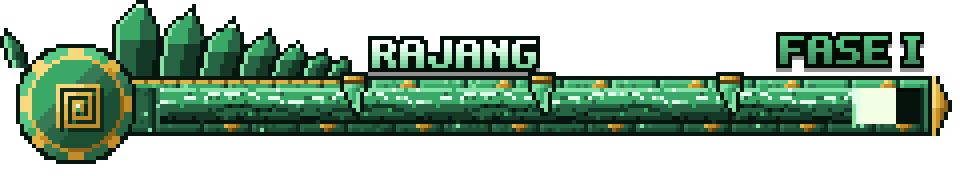
Fase II
Antes
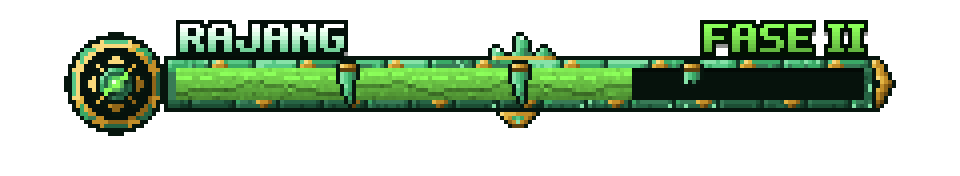
Después
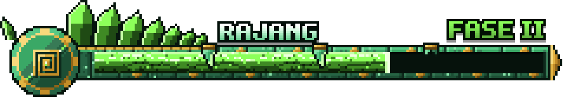
Fase III, durante el Sello
Antes
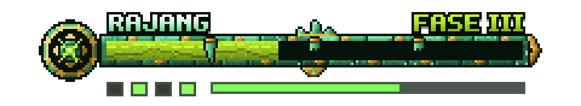
Después
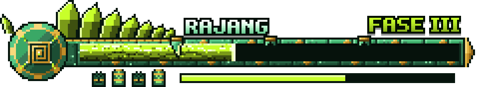
Fase IV
Antes
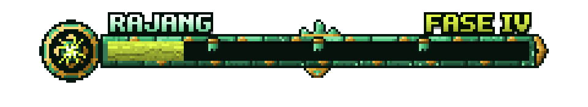
Después
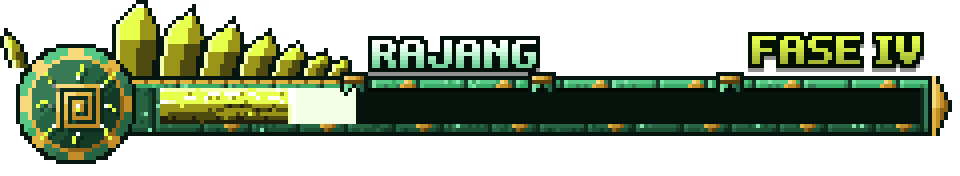
Furia de Jade
Antes
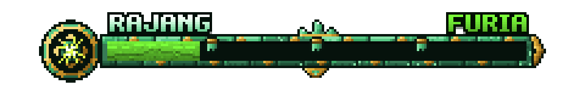
Después
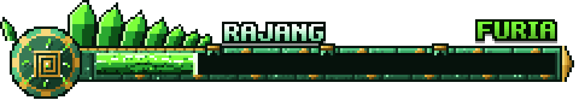
Liberado
Antes
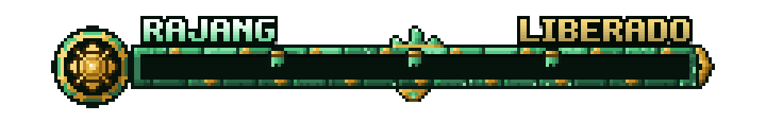
Después
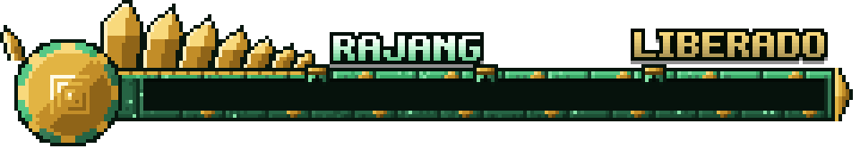
Lo que no cambia: cómo funciona la barra. Solo cambia el dibujo. Si la de Nerea o la de Aeralis están a la vista, la de Rajang sigue yendo debajo.